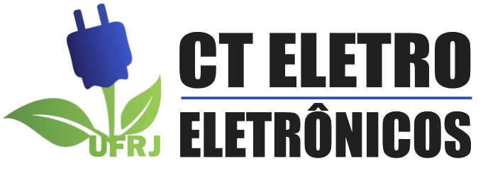

Hub de Economia Circular Tecnológica · Desde 2016
Coleta, triagem, reparo e logística reversa de resíduos eletrônicos no CT.
Tópicos do CT Eletro
Cards com imagem, resumo e acesso à página completa de cada tema.
💻 Gestão de E-Waste no Centro de Tecnologia
O CT Eletroeletrônicos é um programa ambiental criado em 2016 com o objetivo de promover a destinação ambientalmente adequada dos Resíduos de Equipamentos Eletroeletrônicos (REEE) gerados no CT/UFRJ.
O programa atua na captação de materiais em Pontos de Entrega Voluntária (PEVs), na triagem de computadores acadêmicos inservíveis e na recondicionação de peças em parceria com laboratórios de informática, promovendo a inclusão digital e a logística reversa.
📜 Linha do Tempo
- 🕒 2014: Idealização do programa.
- 🕒 2016: Início oficial das atividades e primeiros PEVs.
- 🕒 2017: Instalação dos Pontos de Entrega Voluntária fixos.
- 🕒 2018: Mapeamento dos grandes geradores de REEE na universidade.
- 🕒 2026: Integração com a Casamata Digital e Banco de Componentes acadêmico.
🔄 O Caminho do Eletroeletrônico
Dinamismo interativo: acompanhe o fluxo que o lixo eletrônico percorre até sua destinação final.
1. Descarte no PEV
Deposite seus cabos, celulares ou carregadores antigos nos pontos de coleta voluntários.
📱 O Que é REEE?
Os Resíduos de Equipamentos Eletroeletrônicos englobam computadores, monitores, teclados, mouses, celulares, cabos, carregadores, impressoras e pilhas que deixaram de ter utilidade.
🚫 Por Que Não Descartar no Lixo Comum?
Equipamentos eletrônicos contêm substâncias altamente tóxicas e metais pesados. Se jogados em lixões, podem vazar contaminando as águas subterrâneas e causando danos à saúde de catadores e da comunidade.
⚠️ Componentes Tóxicos do E-waste
- ☠️ Chumbo: Danifica o sistema nervoso central (placas de circuito).
- ☠️ Mercúrio: Altamente neurotóxico (lâmpadas de monitores LCD antigos).
- ☠️ Cádmio: Acumula-se nos rins e pulmões (baterias recarregáveis).
- ☠️ Lítio & Cobalto: Riscos de ignição e poluição de solo (baterias de celulares).
📖 Conhecendo os Componentes
Veja detalhes importantes na hora de fazer o seu Pedido de Coleta.
📱 Celulares
Essenciais para a mineração urbana. Ao registrar, informe a marca, o modelo e os principais defeitos (ex: tela quebrada, bateria inchada).
💻 Computadores
Podem ser reaproveitados. Informe a marca, defeito e quais componentes internos ele ainda possui (ex: placa-mãe, HD, processador).
🖨️ Impressoras
Possuem muitos motores e plásticos. Especifique se é jato de tinta ou laser, a marca e se acompanha cartuchos/toners.
🧠 Memórias RAM
Pequenas, mas valiosas. Informe o tipo (DDR3, DDR4) e a capacidade em GB, se souber.
⚙️ Processadores
O cérebro do computador. Detalhe a marca (Intel, AMD) e o modelo (ex: Core i5, Ryzen 5).
🎮 Placas de Vídeo
Altamente requisitadas para consertos. Informe o chipset (ex: NVIDIA, AMD) e o defeito relatado.
🔧 Oficina e Banco de Componentes REEE
Visão do almoxarifado virtual de partes de computador recondicionadas e disponíveis para projetos acadêmicos e laboratórios.
🖥️ Componentes Recondicionados em Estoque
Os componentes abaixo foram catalogados e testados por extensionistas na Casamata e estão livres para uso em pesquisa e extensão.
| Descrição do Componente | Categoria | Origem do Descarte | Status |
|---|
🔋 Simulador de Reciclagem Tecnológica
Selecione um equipamento e veja quais minerais valiosos são recuperados e a pegada ecológica evitada ao reciclarmos na Casamata.
Recuperação Estimada
- ⭐ Ouro fino: --
- ⭐ Prata fina: --
- ⭐ Cobre metálico: --
- 🌍 CO₂ Evitado: --
Carregando destinação...
🔒 Segurança de Dados
Antes de doar ou descartar seu notebook ou smartphone, certifique-se de proteger sua privacidade:
- 📥 Backup: Salve seus arquivos importantes em nuvem ou HD externo.
- 🧼 Formatação: Realize a restauração de fábrica (Wipe) do aparelho.
- 🔌 Contas: Remova contas Google, iCloud e senhas salvas.
- 💾 Mídia: Retire cartões SD e chips SIM do celular.
🛡️ Destinação Responsável na Casamata
Itens sem possibilidade de recuperação são triados e destinados a parceiros autorizados para trituração e refino de cobre e metais preciosos.
Quer doar equipamentos de informática da UFRJ? Lembre-se que equipamentos patrimoniados exigem trâmite administrativo de baixa no CT. Nós orientamos laboratórios e secretarias sobre como proceder legalmente.